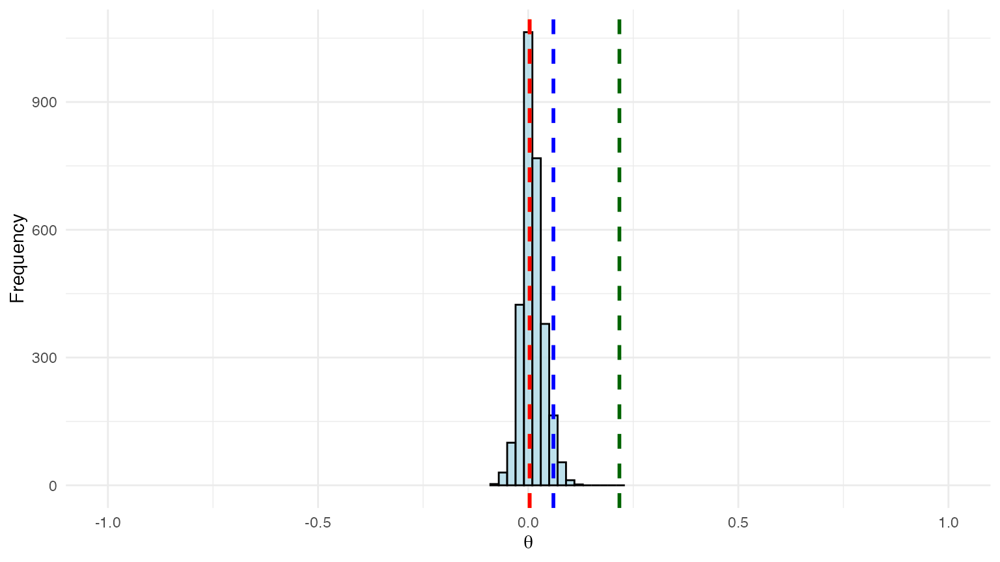
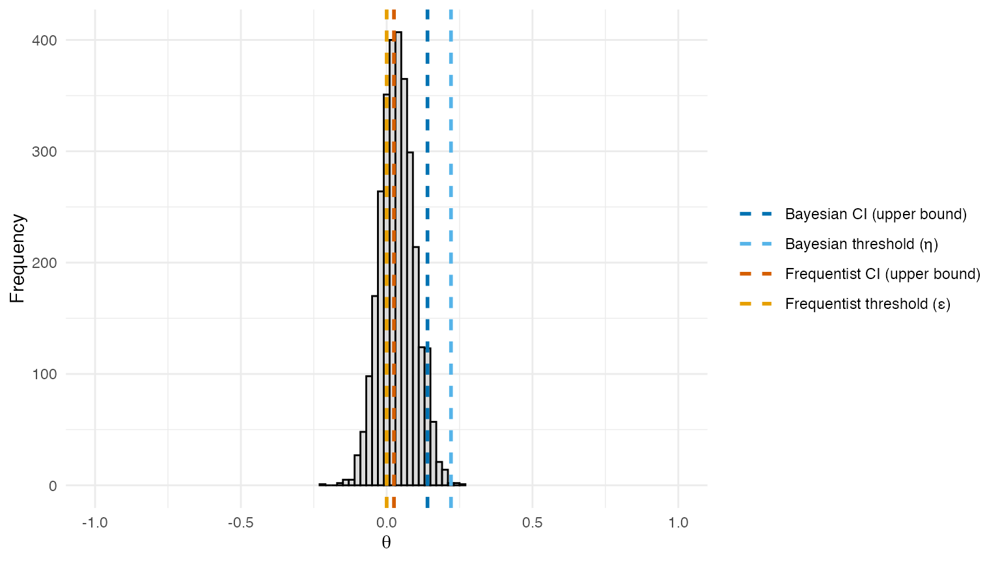
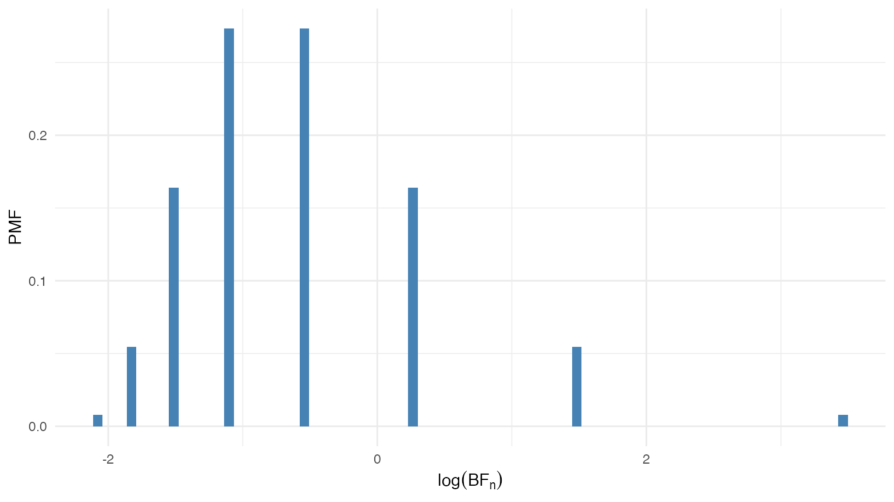

Introduction
BSET (Bayesian Surrogate Evaluation Test) is an
R package for assessing the validity of surrogate markers
in clinical trials. It provides hypothesis testing tools to evaluate
whether a surrogate can reliably estimate the causal effect of a
treatment on a primary outcome. The package implements the
imputation-based Bayesian methodology of Carlotti
and Parast (2026), extending the frequentist rank-based approach
of Parast et al. (2024). BSET addresses
key limitations of the frequentist method, including the lack of causal
interpretability and the inability to adjust for covariates in the
estimation process.
The package supports Bayesian testing both with and without baseline covariates. Additionally, it includes comprehensive simulation suites to replicate studies from both papers, enabling performance comparisons between Bayesian and frequentist approaches across diverse clinical scenarios.
Installation
The package is not yet available on CRAN, but you can install the development version of BSET from GitHub with:
# install.packages("pak")
# pak::pak("PietroCarlotti/BSET")To follow along with the examples in this tutorial, you will also need to install the following packages:
Quick Start
This section provides a minimal working example for readers who want
to apply BSET to their data right away. The main function is
BSET, which runs the test with or without adjusting for
covariates depending on whether the X argument is provided.
It requires a data frame with columns for the primary outcome
Y, the surrogate S, and the treatment
assignment Z. When X is provided, the model
additionally adjusts for those baseline covariates.
To illustrate the usage of the package, we simulate a small dataset with a binary covariate:
# Set the random seed for reproducibility
set.seed(1234)
# Sample size
n <- 50
# Binary covariate
X <- rbinom(n, 1, 0.5)
# Treatment assignment
Z <- rbinom(n, 1, 0.5)
# Primary outcome
Y <- 2 * Z -3 * X + rnorm(n)
# Surrogate outcome
S <- Y + rnorm(n)
df <- data.frame(
Y = Y,
S = S,
Z = Z,
X = X
)To run BSET without adjusting for covariates, pass the data frame and the names of the relevant columns:
result_no_X <- BSET::BSET(
data = df,
Y = "Y",
S = "S",
Z = "Z",
seed = 123,
plot = TRUE
)
result_no_X$theta_posterior_plot
Posterior distribution of
from BSET without covariates. Dashed lines show estimated
quantities: the Bayesian 95% credible interval upper bound and threshold
(blue shades), and the frequentist
95% confidence interval upper bound and threshold
(orange shades).
To run BSET with a baseline covariate, add the
covariate column name via the X argument:
result_X <- BSET::BSET(
data = df,
Y = "Y",
S = "S",
Z = "Z",
X = "X",
seed = 123,
plot = TRUE
)
result_X$theta_posterior_plot
Posterior distribution of
from BSET, adjusted for a baseline covariate. Dashed lines
show estimated quantities: the Bayesian 95% credible interval upper
bound and threshold
(blue shades), and the frequentist
95% confidence interval upper bound and threshold
(orange shades).
The function returns the posterior distribution of , the discrepancy between the treatment effects on and . Dashed lines in blue shades mark estimated Bayesian quantities: the upper bound of the 95% credible interval and the validation threshold . Dashed lines in orange shades mark estimated frequentist quantities: the upper bound of the 95% confidence interval and the threshold from Parast et al. (2024). Solid lines mark the true values: purple for and pink for . If the Bayesian credible interval upper bound falls below the threshold , there is evidence that the surrogate is valid.
The rest of this tutorial explains how the data are generated, how the estimands and are computed, and how the validation threshold is calibrated.
Generating the data
We start by setting the random seed for reproducibility of the results.
# Set the random seed for reproducibility
set.seed(1234)
# Sample size and treatment assignment probability used throughout
n <- 50
p <- 0.5The package includes two functions to generate data for the
simulations: DGP and DGP_X. The first one
generates data from the simulation settings of Parast et al. (2024), which do not include
covariates; the second one generates data which depends on a binary
covariate
and is used for the simulations of Carlotti and
Parast (2026).
For example, this is how we can generate data from the second setting defined in Parast et al. (2024) (i.e.: the setting where the surrogate is perfect and covariates are not included):
# Mean vector of potential outcomes for the primary outcome and the surrogate
mu_star <- c(6, 6, 2.5, 2.5)
# Covariance matrix of potential outcomes for the primary outcome and the surrogate
Sigma_star <- kronecker(
diag(2),
matrix(
data = c(3, 3,
3, 3.1),
nrow = 2,
ncol = 2)
)
# Generate the data
data_no_X <- BSET::DGP_no_X(
n = n,
p = p,
mu_star = mu_star,
Sigma_star = Sigma_star,
model = "Gaussian"
)While this is how we can generate data from the first setting defined in Carlotti and Parast (2026) (i.e.: the setting where the surrogate is useful and covariates are included):
# Binary covariate probability
q <- 0.5
# Mean vector for potential outcomes when X = 0 and when X = 1
mu_0 <- c(5, 5, 0, 0)
mu_1 <- c(5, -5, 0, -10)
# Covariance matrix for potential outcomes when X = 0 and when X = 1
Sigma_0 <- kronecker(
diag(2),
matrix(
data = c(1, 1,
1, 2),
nrow = 2,
ncol = 2)
)
Sigma_1 <- kronecker(
diag(2),
matrix(
data = c(1, 1,
1, 2),
nrow = 2,
ncol = 2)
)
# Generate the data
data_X <- BSET::DGP_X_binary(
n = n,
p = p,
q = q,
mu_0 = mu_0,
mu_1 = mu_1,
Sigma_0 = Sigma_0,
Sigma_1 = Sigma_1
)Computing the true values of the discrepancy parameters
Given the data generated with the above functions, we can estimate
and
using the compute_delta and compute_theta
functions, respectively.
For example, for the data generated without covariates:
# Compute delta
delta_no_X <- BSET::compute_delta(MC_data = data_no_X)
# Compute theta
theta_no_X <- BSET::compute_theta(MC_data = data_no_X)And for the data generated with covariates:
# Compute delta
delta_X <- BSET::compute_delta(MC_data = data_X)
# Compute theta
theta_X <- BSET::compute_theta(MC_data = data_X)The estimated values of and are shown in the table below.
| Setting | ||
|---|---|---|
| No X (Perfect Surrogate) | 0.010 | 0 |
| Binary X | 0.212 | 0 |
To determine the values of
and
for all the settings defined in the two papers, we use a large-scale
Monte Carlo simulation via the
compute_estimands_Parast_et_al_2024 function for data
without covariates (Parast et al. 2024),
and the compute_estimands_Carlotti_and_Parast_2026 function
for data including covariates (Carlotti and
Parast 2026). These functions run a Monte Carlo simulation with a
large number of samples (e.g., 1,000,000) and can be called as
follows:
# Compute Monte Carlo estimands (based on 1,000,000 samples) — this is slow
estimands_Parast_et_al_2024 <- BSET::compute_estimands_Parast_et_al_2024(n_MC = 1000000)
estimands_Carlotti_and_Parast_2026 <- BSET::compute_estimands_Carlotti_and_Parast_2026(n_MC = 1000000)For the purpose of this tutorial, we load the precomputed versions shipped with the package:
# Load precomputed Monte Carlo estimands (based on 1,000,000 samples)
estimands_Parast_et_al_2024 <- BSET::estimands_Parast_et_al_2024
estimands_Carlotti_and_Parast_2026 <- BSET::estimands_Carlotti_and_Parast_2026As shown in the table below, and yield identical values (up to Monte Carlo error) across all settings. Both estimands are close to for a perfect surrogate, they are significantly higher for a useless surrogate, and take intermediate values for imperfect surrogates or misspecified models.
| Setting | ||
|---|---|---|
| Useless surrogate | 0.293 | 0.293 |
| Perfect surrogate | 0.003 | 0.003 |
| Imperfect surrogate | 0.111 | 0.111 |
| Misspecified model | 0.148 | 0.148 |
Whereas, as shown in the table below, when we include covariates in the data generating process, and yield different values. In particular, while is close to for a perfect surrogate, is significantly higher.
| Setting | ||
|---|---|---|
| Perfect surrogate | 0.252 | 0.006 |
| Perfect surrogate | 0.357 | 0.000 |
Computing the validation threshold
The validation threshold
is the value of
below which the surrogate is considered valid. As explained in Carlotti and Parast (2026), the computation of
is based on the distribution of the following Bayes factor:
Given the true value of
,
the distribution of
can be computed with the function compute_BF_distribution.
For example, the distribution of the Bayes factor under the null
hypothesis
can be computed as follows:
# Hypothesized value of V_S under the null
V_S_zero <- 0.5
# Prior parameters for the Beta distribution
a <- 1
b <- 1
# Alternative hypothesis for the Bayes factor
BF_alternative <- "greater"
# Compute the distribution of the Bayes factor
BF_distribution <- BSET::compute_BF_distribution(
n = n,
V_S_true = V_S_zero,
V_S_zero = V_S_zero,
a = a,
b = b,
BF_alternative = BF_alternative
)The distribution of the Bayes factor under the null hypothesis is shown in the figure below. Since the Bayes factor can take values on a very wide range, we plot the distribution on the log scale.

Distribution of the Bayes factor under the null hypothesis .
Given the distribution of the Bayes factor under the null hypothesis, we can compute the critical value corresponding to a specified Type I error rate .
# Type I error rate
alpha <- 0.05
# Compute the critical value of the Bayes factor corresponding to alpha
BF_alpha <- BF_distribution %>%
dplyr::filter(BF_CDF >= 1 - alpha) %>%
dplyr::slice(1) %>%
dplyr::pull(BF_values)For example, for we have
Once we have the value of , we can compute the value of that satisfies the following equation:
where
is the desired power of the test. A root-finding algorithm is used to
solve for the value of
that satisfies the above equation, which is implemented in the function
compute_V_S_star.
For example, for a Type II error rate of , we can compute the value of as follows:
# Type II error rate
beta <- 0.2
# Compute the value of v_S that satisfies the power constraint
V_S_star <- BSET::compute_V_S_star(
n = n,
alpha = alpha,
beta = beta,
V_S_zero = V_S_zero,
a = a,
b = b,
BF_alternative = BF_alternative,
root_tolerance = 1e-16
)$V_S_starThen, we have that
Finally, the validation threshold can be computed as
where is the hypothesized value of the treatment effect on the primary outcome (typically set equal to the estimate computed on the available data).
For example, we can set equal to the Monte Carlo estimate of for setting 1 of Parast et al. (2024) (i.e.: the setting where the surrogate is perfect and covariates are not included).
# Hypothesized value of the treatment effect on the primary outcome
v_Y <- estimands_Parast_et_al_2024$V_Y_MC[2]
# Compute the validation threshold eta
eta <- max(v_Y - V_S_star, 0)In this case, we have that
Running the BSET procedure
The package includes the function BSET to run the BSET
procedure. When the X argument is omitted (or set to
NULL), the procedure runs without adjusting for covariates;
when X is provided, it adjusts for the specified baseline
covariates.
The result of the procedure is summarized by the posterior distribution of and its 95% credible interval. In general, if the upper bound of the credible interval falls below the validation threshold , the BSET procedure concludes that there is evidence that the surrogate is valid. If instead the upper bound exceeds , the procedure does not find sufficient evidence of surrogacy.
BSET with no covariates
As an example, we can run the BSET procedure without adjusting for
covariates on the data generated from the second setting of Parast et al. (2024). First of all, we need to
prepare the data in the format required by BSET: a data
frame with three columns, where the first column contains the observed
values of the primary outcome
,
the second column contains the observed values of the surrogate
,
and the third column contains the treatment assignment
.
# Prepare the data for BSET (no covariates)
BSET_no_X_data <- data.frame(
Y = data_no_X$P_observed[, "Y"],
S = data_no_X$P_observed[, "S"],
Z = data_no_X$Z
)We also need to define the posterior sampling parameters:
-
n_chains: The number of MCMC chains to run. -
n_iter: The total number of MCMC iterations to run for each chain. -
burn_in_ratio: The proportion of MCMC iterations to discard as burn-in.
# Posterior sampling parameters
n_chains <- 2
n_iter <- 2000
burn_in_ratio <- 0.25Then, we need to define the prior parameters for the distribution of the potential outcomes in our Bayesian model. In particular, we need to specify:
-
mu_0: A numeric vector of length 4 containing the prior means for the potential outcomes. -
Sigma_0: A numeric positive-definite matrix of dimension containing the prior covariance matrix for the potential outcomes. -
s: A numeric vector of length 4 containing the prior scale parameters for the potential outcomes. -
tau: A numeric scalar containing the prior scale parameter for the correlation matrix of the potential outcomes.
If the true values of
and
are known, we can also specify them as input to BSET to
check whether they are included in the posterior credible intervals. In
this case, we can set
and
equal to the Monte Carlo estimates for setting 2 of Parast et
al. (2024).
We can also specify some additional parameters for the BSET procedure, such as:
-
seed: An integer scalar to set the random seed for reproducibility of the MCMC sampling process. -
plot: A logical scalar indicating whether to plot the posterior distribution of . -
mute: A logical scalar indicating whether to suppress the output of the MCMC sampling process. -
parallel: A logical scalar indicating whether to run the MCMC sampling process in parallel or sequentially.
Finally, we can run the BSET procedure without adjusting for covariates as follows:
# Run the BSET procedure without adjusting for covariates
BSET_no_X_results <- BSET::BSET(
data = BSET_no_X_data,
Y = "Y",
S = "S",
Z = "Z",
delta_true = estimands_Parast_et_al_2024$delta_MC[2],
theta_true = estimands_Parast_et_al_2024$theta_MC[2],
seed = 123,
n_chains = n_chains,
n_iter = n_iter,
burn_in_ratio = burn_in_ratio,
a = a,
b = b,
alpha = alpha,
beta = beta,
V_S_zero = V_S_zero,
BF_alternative = BF_alternative,
root_tolerance = 1e-16,
mu_0 = mu_0,
Sigma_0 = Sigma_0,
s = s,
tau = tau,
plot = TRUE,
mute = TRUE,
parallel = TRUE
)The posterior distribution of from the BSET procedure without adjusting for covariates is shown in the figure below.
![Posterior distribution of $\theta$ from the BSET procedure without adjusting for covariates. Dashed lines show estimated quantities: the Bayesian 95\% credible interval upper bound and threshold $\eta$ (<span style='color:#0072B2'>blue shades</span>), and the frequentist 95\% confidence interval upper bound and threshold $\varepsilon$ (<span style='color:#D55E00'>orange shades</span>). Solid lines show the true values of $\theta$ (<span style='color:#551A8B'>purple</span>) and $\delta$ (<span style='color:#CC79A7'>pink</span>).](BSET_tutorial_files/figure-html/BSET-no-X-plot-1.png)
Posterior distribution of from the BSET procedure without adjusting for covariates. Dashed lines show estimated quantities: the Bayesian 95% credible interval upper bound and threshold (blue shades), and the frequentist 95% confidence interval upper bound and threshold (orange shades). Solid lines show the true values of (purple) and (pink).
Two features of this result are worth highlighting. First, the posterior distribution of is centered around the true value of , demonstrating that the Bayesian imputation approach accurately recovers the true discrepancy between the treatment effects on and . In this setting, covariates do not play a role in the data generating process, so the frequentist estimand coincides with and both methods perform similarly. Second, since the upper bound of the 95% credible interval falls below the validation threshold , the BSET procedure concludes that there is evidence that the surrogate is valid in this setting.
BSET with covariates
As an example, we can run the BSET procedure adjusting for covariates
on the data generated from the first setting of Carlotti and Parast (2026). First of all, we
need to prepare the data in the format required by BSET: a
data frame with four columns, where the first column contains the
observed values of the primary outcome
,
the second column contains the observed values of the surrogate
,
the third column contains the treatment assignment
,
and the fourth column contains the values of the binary covariate
.
We call
the number of covariates, which in this case is equal to
(including the intercept).
# Prepare the data for BSET (with covariates)
BSET_X_data <- data.frame(
Y = data_X$P_observed[, "Y"],
S = data_X$P_observed[, "S"],
Z = data_X$Z,
X = data_X$X
)The posterior sampling parameters are defined in the same way as for the BSET procedure without adjusting for covariates. Whereas the prior parameters for the distribution of the potential outcomes in our Bayesian model are defined as follows:
-
mu_beta: A numeric vector of length containing the prior means for the regression coefficients of the potential outcomes on the covariates. -
Sigma_beta: A numeric positive-definite matrix of dimension containing the prior covariance matrix for the regression coefficients of the potential outcomes on the covariates.
# Prior parameters for the regression coefficients of the potential outcomes on the covariates
d <- 2
mu_beta <- rep(0, d)
Sigma_beta <- 10*diag(d)We can also specify the true values of
and
as input to BSET to check if they are included in the
posterior credible intervals. In this case, we can set
and
equal to the Monte Carlo estimates of
and
for setting 1 of Carlotti and Parast
(2026).
Finally, we can run the BSET procedure adjusting for covariates as follows:
# Run the BSET procedure adjusting for covariates
BSET_X_results <- BSET::BSET(
data = BSET_X_data,
Y = "Y",
S = "S",
Z = "Z",
X = "X",
delta_true = estimands_Carlotti_and_Parast_2026$delta_MC[1],
theta_true = estimands_Carlotti_and_Parast_2026$theta_MC[1],
seed = 123,
n_chains = n_chains,
n_iter = n_iter,
burn_in_ratio = burn_in_ratio,
a = a,
b = b,
alpha = alpha,
beta = beta,
V_S_zero = V_S_zero,
BF_alternative = BF_alternative,
root_tolerance = 1e-16,
mu_beta = mu_beta,
Sigma_beta = Sigma_beta,
s = s,
tau = tau,
plot = TRUE,
mute = TRUE,
parallel = TRUE
)The posterior distribution of from the BSET procedure adjusting for covariates is shown in the figure below.
![Posterior distribution of $\theta$ from the BSET procedure adjusting for covariates. Dashed lines show estimated quantities: the Bayesian 95\% credible interval upper bound and threshold $\eta$ (<span style='color:#0072B2'>blue shades</span>), and the frequentist 95\% confidence interval upper bound and threshold $\varepsilon$ (<span style='color:#D55E00'>orange shades</span>). Solid lines show the true values of $\theta$ (<span style='color:#551A8B'>purple</span>) and $\delta$ (<span style='color:#CC79A7'>pink</span>).](BSET_tutorial_files/figure-html/BSET-X-plot-1.png)
Posterior distribution of from the BSET procedure adjusting for covariates. Dashed lines show estimated quantities: the Bayesian 95% credible interval upper bound and threshold (blue shades), and the frequentist 95% confidence interval upper bound and threshold (orange shades). Solid lines show the true values of (purple) and (pink).
Unlike the previous setting, covariates now play a role in the data generating process, and this is where the two methods diverge. The posterior distribution of is still centered around its true value, confirming that the covariate-adjusted Bayesian model correctly recovers the true discrepancy parameter. In contrast, the frequentist estimand diverges substantially from the true , illustrating a key limitation of rank-based methods when covariates are present. Since the upper bound of the 95% credible interval falls below the validation threshold , the BSET procedure correctly concludes that there is evidence that the surrogate is valid in this setting, while the frequentist method, being based on , would incorrectly conclude that it is not.